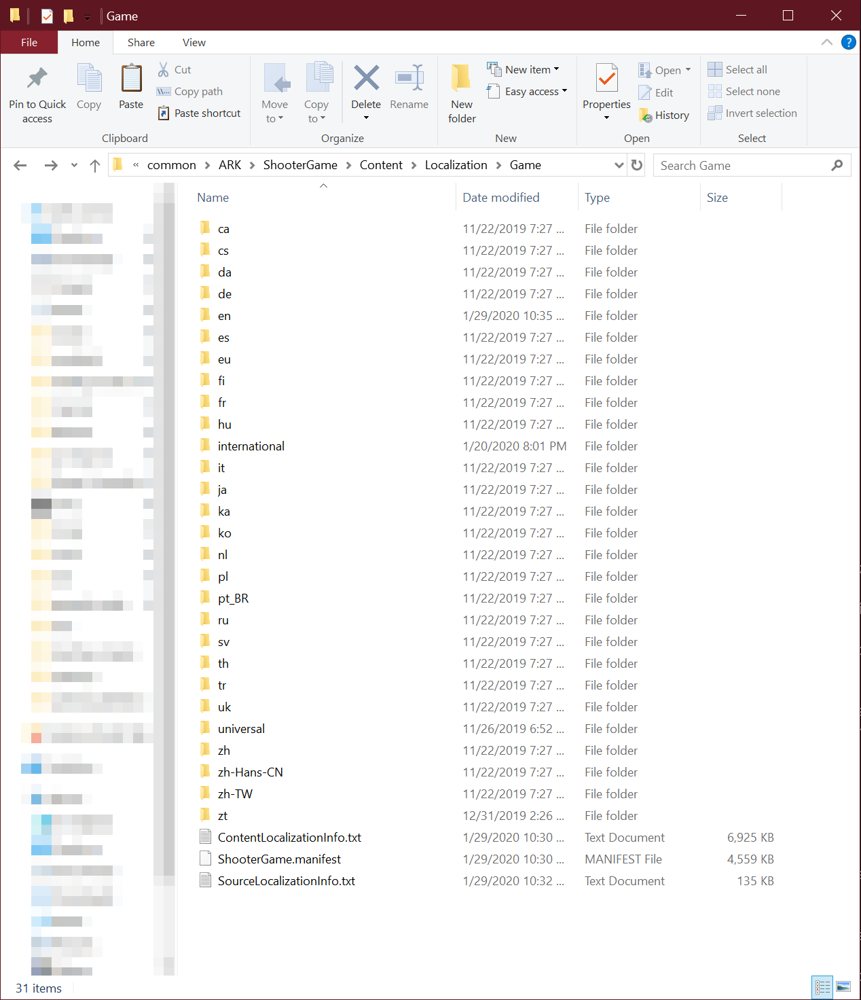

I. Introduction
Inactive Empire is a sad attempt to become another “Cerberus” (prev. owned by Kargos). Most of its members are aware of the fact that they will never become as strong, powerful, and—of course—good-looking as Cerbus' old leader, Kargos — however, they still try their best to become a tribe themselves.
Unfortunately, Kargos and Cerberus drifted apart during February. The crying was too annyoing. The crying was so annoying that Kargos had no more desire to serve as the owner. His fellow players did not appreciate the effort and stress he invested into the Tribe.
Shortly after Kargos left the post of owner, Cerberus was “taken apart” by very, very aggressive ARK players. Kargos didn't care about that. On the contrary; he was happy — glad to see his former teammates and friends brutally mauled and “removed”. They had only themselves to blame.
Using dinos is cool, but... do you know what's even cooler? Simple; property law.
We here at Inactive Empire repsect other player's property – and we expect you to do the same.
At first, you won't have your own dinos. For that period of time, you can use our so-called "FFA" or "Tribe Use" dinos. Dinos with such a tag are not player-owned and don't have an imprint buff. They can be freely taken by anyone to do whatever task you need to do. This is just temporarily as you will, if you decide to stay with us, be able to claim your own dinos, imprint them, and level them to fir your needs.
As of 2/8/2020 (?), the following tags are taken:
| Player |
Player's tag |
| Mats |
M |
| 4Box |
Oli |
| Eiscreme17 |
D |
| VARUS |
V / VARUS |
| Unterstützer |
UNT |
In Inactive Empire, you are (almost) free to do whatever you want. While our main goal is to be a strong, independent tribe that has many members who enjoy both farming and fighting, we still treat ARK as a game which is supposed to be fun.
Right now, the main focus of our play style revolves around farming resources to make sure that we have enough to defend the base while it's still being build. In the future, we will of course do more "fun" things like raiding, PVP, boss fights, etc.
If you plan on doing something on your own, we'd appreciate if you'd:
- farm the resources in advance
- make sure that no dinos die (on raid | origin server can be seen on dead tames)
- look for people who can assist you in case something goes wrong
- (more content here)
What is an universal (custom) font?
If you're playing on the official ARK PVP network, you will—sooner or later—encounter “moon runes”. “Moon runes” are a term used by ARK players to generalize any non-latin symbols (i. e. Chinese, Japanese, Russian, Korean, Unicode).
In some situations, it’s useful to know what kind of languages your enemies use. Based on their language, you can almost always determine their location and therefore their timezone. This proofs to be useful when planning offline raids.
Download universal.zip
How do I install said font?
1. Download the .zip archive using the download button.
2. Navigate to your ARK game files in your Steam directory and open ...\ShooterGame\Content\Localization\Game.

Hover to enlarge
3. Copy the international folder from the .zip archive into the directory.
4. Open Steam, select ARK, right-click it, and select "Properties".
5. Click on "Set launch options" and enter the following code: -culture=universal